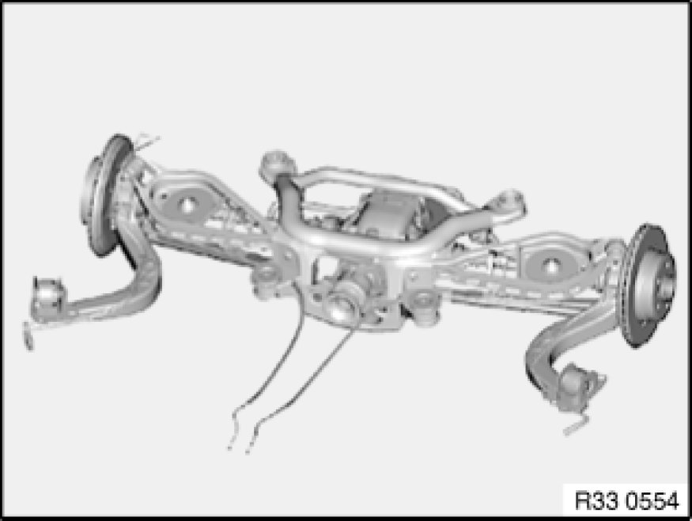

Replacing Rear Axle Carrier
33 31 011 - Replacing rear axle carrier

Warning!
Danger of injury!
Failure to comply with the following instructions may result in the vehicle slipping off the lifting platform and critically injuring other persons.
Read and observe the information on load distribution in the lifting platform operating instructions.
Before lowering/removing the rear axle carrier, it is essential to place a minimum load of 100 kg in the luggage compartment to prevent the vehicle from toppling/slipping off the lifting platform!
When supporting components, make sure that
- the vehicle can no longer be raised or lowered
- the vehicle does not lift off the locating plates on the lifting platform

Necessary preliminary tasks:
- Remove rear differential Removing and Installing/Replacing Rear Differential
- Remove complete rear axle carrier Removing and Installing Complete Rear Axle Carrier

Disengage handbrake Bowden cables from expander lock Service and Repair and feed out of rear axle carrier.
Remove stabilizer bar Removing and Installing/Replacing Rear Stabilizer.
Remove lower control arm from rear axle carrier.
Remove upper control arm on both sides from rear axle carrier Replacing One Upper Control Arm and remove with trailing arm and output shaft.
If necessary, remove height setting sensor and bracket Replacing Rear Ride-Height Sensor.
If necessary, remove vibration damper [1][2]Rear Subframe.
After installation:
- Adjusting handbrake Adjustments
- Perform chassis alignment check